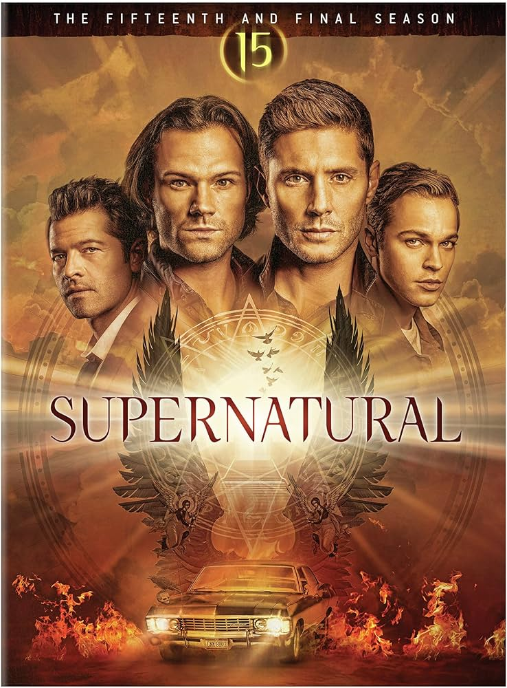
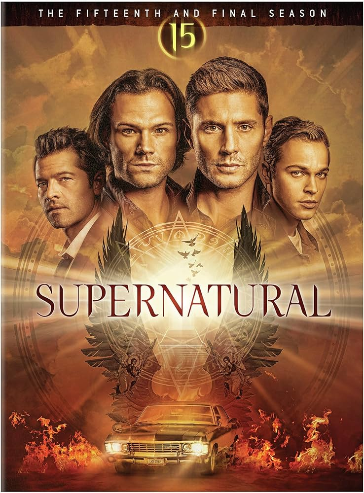
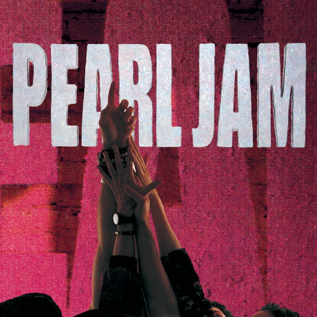

Alt: Duas imagens, sendo a primeira do meu avatar, "Ranger Azul", e a segunda minha foto
Sobre
Alt: Controlador de áudio com as informações do texto abaixo sobre mim
Me chamo Lucas, tenho 23 anos e moro na cidade de São Bernardo do Campo. Trabalho em uma empresa de balanças chamada Toledo do Brasil, na área de tecnologia, e meus hobbies são tocar música, jogos, ver séries e também alguns animes mais antigos, que foi de onde surgiu minha ideia de avatar, Ranger azul (minha cor favorita) da série Power Rangers que eu assistia quando era criança, além de se encaixar com a tematica de equipe.
Filme e série que recomendo
 

Alt: duas imagens de um filme e uma série que recomendo, sendo a primeira o cartaz do filme "O Senhor dos Anéis: A Sociedade do Anel" e o segundo, a série de televisão "Supernatural"
Gosto bastante de vôlei, mas ultimamente faço apenas academia e tenho preferência por Rock e algumas músicas Pop, principalmente as de 2010, e gosto de filmes de fantasia e ficção.
Bandas que recomendo

Alt: Três imagens de bandas que recomendo, sendo a primeira "Pearl Jam" seguido por "Radiohead" e "Green Day"
Minhas perpectivas futuras são de finalizar o curso de Informação até a metade do ano que vem e seguir com a minha carreira atual.
- Créditos das imagens
- Amazon, disponível em: https://www.amazon.com.br/SUPERNATURAL-THE-FIFTEENTH-FINAL-SEASON/dp/B08LR8L91Y
- Spotify, disponível em: https://open.spotify.com/intl-pt/track/4iE8a1PGGqKUXMgqMqNYju
- Deezer, disponível em: https://www.deezer.com/br/album/90799
- Bol, disponível em: https://www.bol.com/be/nl/p/ten/1000004000001675/
- Wikipedia, disponível em: https://pt.wikipedia.org/wiki/The_Lord_of_the_Rings:_The_Fellowship_of_the_Ring
- Pinimg, disponível em: https://i.pinimg.com/550x/0a/37/c0/0a37c072811e12a93e785c3a0aef820b.jpg